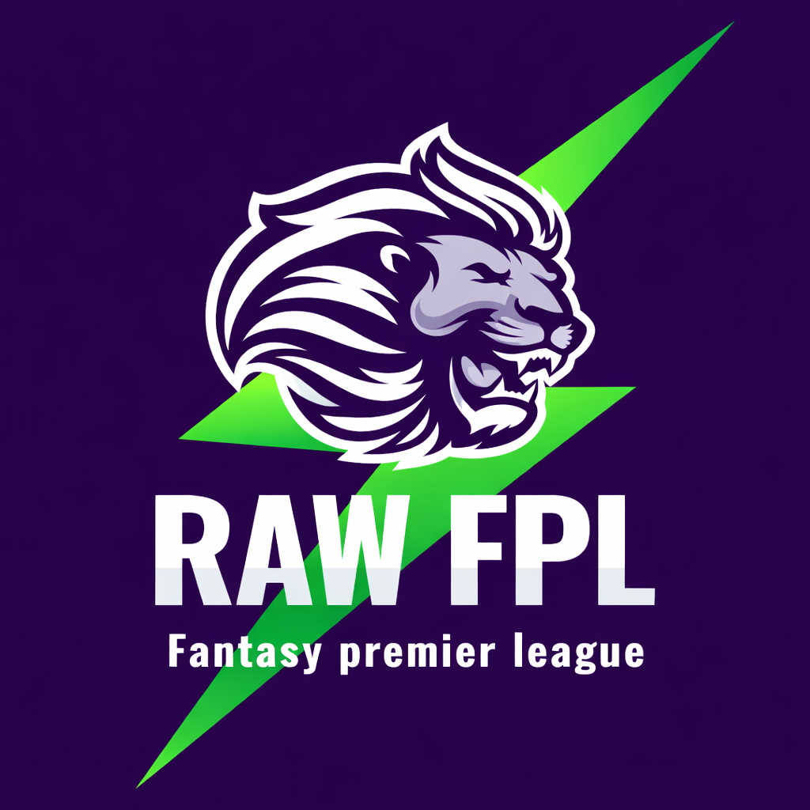

Fantasy Premier League • Matchweek Updates

RAWFPL Video Hub
Weekly FPL breakdowns, transfer thoughts, captain picks and matchweek reactions — all in one place.
⚽ FPL Every Week
Latest & Previous Uploads
Auto-updating playlist from the RAWFPL channel.